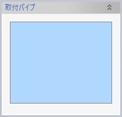
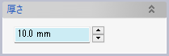
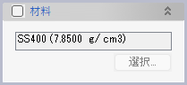

配管防熱材
配管を覆う防熱材をソリッドボディとして作成します。
防熱材は表示フィルターでは「/ボディ/配管防熱材」に分類されます。
操作方法
防熱材を取り付けたいパイプやエルボなどを選択し、防熱材の厚みを指定します。表示されるプレビューを確認してOKをクリックします。
パラメータ
取付パイプ

防熱材を取り付けたいパイプやエルボなどを指定します。パイプは複数選択できますが、選択したパイプと作成された防熱材とは1対1の関係になります。
厚さ

防熱材の厚みを指定します。変数が利用できます。
要素名

左上のチェックボックスをチェックすると、作成される防熱材の要素名を指定できます。
要素グループ

左上のチェックボックスをチェックすると、作成される防熱材が指定した要素グループに追加されます。
材料

左上のチェックボックスをチェックすると、作成される防熱材の材料を指定できます。
配管系統リストを利用した防熱材の作成
配管系統属性を設定済みの配管セット（配管系統リストを読み込んで作成した配管セット）でコンテキストメニューを表示し、項目「配管系統属性による防熱材生成」を実行すると、設定済みの属性値を使って防熱材を作成（または既存の防熱材を更新）できます。